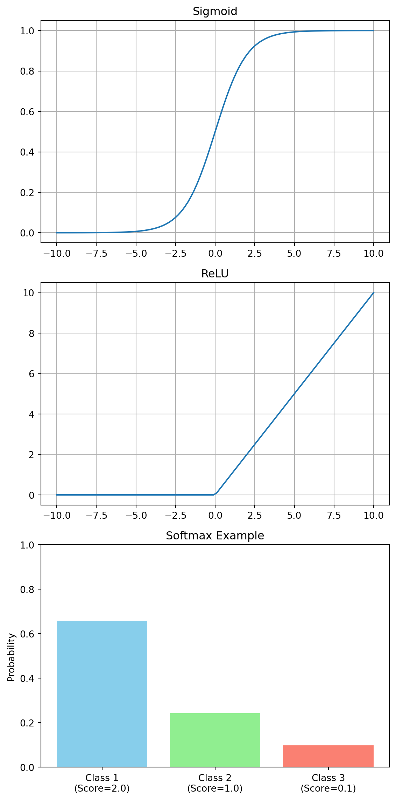

graph LR
subgraph Input_Layer [Input Layer]
I1(Input 1)
I2(Input 2)
I3(Input 3)
end
subgraph Hidden_Layer [Hidden Layer]
H1(Neuron 1)
H2(Neuron 2)
H3(Neuron 3)
H4(Neuron 4)
end
subgraph Output_Layer [Output Layer]
O1(Output 1)
O2(Output 2)
end
I1 --> H1
I1 --> H2
I1 --> H3
I1 --> H4
I2 --> H1
I2 --> H2
I2 --> H3
I2 --> H4
I3 --> H1
I3 --> H2
I3 --> H3
I3 --> H4
H1 --> O1
H1 --> O2
H2 --> O1
H2 --> O2
H3 --> O1
H3 --> O2
H4 --> O1
H4 --> O2
style Input_Layer fill:#f9f,stroke:#333,stroke-width:2px
style Hidden_Layer fill:#ccf,stroke:#333,stroke-width:2px
style Output_Layer fill:#cfc,stroke:#333,stroke-width:2px
深度學習簡介
深度學習 (Deep Learning) 是機器學習的一個子領域，受到人腦神經網路結構的啟發。它在圖像識別、自然語言處理等領域取得了突破性進展。
神經網路
神經網路 (Neural Networks) 由層層堆疊的神經元組成。
感知器
感知器 (Perceptron) 是最簡單的神經網路單元。它接收輸入向量 \(\mathbf{x}\)，計算加權和 z，然後通過活化函數 𝜑 輸出。 \[ z = \sum_{i=1}^{n} w_i x_i + b = \mathbf{w}^T \mathbf{x} + b \] \[ y = \phi(z) \]
活化函數
活化函數 (Activation Functions) 引入非線性，使神經網路能夠學習複雜的模式（如 XOR 問題）。若沒有活化函數，多層神經網路僅等價於單層線性模型。
- Sigmoid：\(\sigma(z) = \frac{1}{1+e^{-z}}\)。輸出在 (0, 1) 之間。缺點是容易發生梯度消失 (Vanishing Gradient)。
- ReLU (Rectified Linear Unit)：\(f(z) = \max(0, z)\)。目前最常用的活化函數。計算簡單，且在正區間梯度恆為 1，解決了梯度消失問題。
- Softmax：用於多分類問題的輸出層，將輸出轉換為機率分佈。 \[ \text{Softmax}(z_i) = \frac{e^{z_i}}{\sum_{j} e^{z_j}} \]
活化函數 (Activation Functions)

前向與反向傳播
神經網路的訓練過程包含兩個主要階段：
- 前向傳播 (Forward Propagation)：
- 數據從輸入層進入網絡。
- 經過每一層的加權求和 z = wT x + b 和活化函數 a = σ(z) 處理。
- 最終在輸出層產生預測值 \(\hat{y}\)。
- 計算損失函數 \(L(\hat{y}, y)\)，衡量預測值與真實值的誤差。
- 反向傳播 (Backward Propagation)：
- 這是訓練的核心。目標是計算損失函數對每個權重 w 的梯度 \(\frac{\partial L}{\partial w}\)。
- 利用微積分中的連鎖律 (Chain Rule)，將誤差從輸出層反向傳遞回輸入層。
- 連鎖律範例：假設 L = f(y), y = g(x)，則 \(\frac{\partial L}{\partial x} = \frac{\partial L}{\partial y} \cdot \frac{\partial y}{\partial x}\)。
- 計算出的梯度將用於更新權重，以減少下一次的預測誤差。
最佳化
最佳化 (Optimization) 過程旨在通過調整模型參數（權重和偏差）來最小化損失函數。
損失函數
損失函數 (Loss Functions) 是模型性能的指標，數值越小越好。
- 均方誤差 (MSE, Mean Squared Error)：
- 適用：迴歸 (Regression) 問題（預測連續數值）。
- 公式：\[ MSE = \frac{1}{N} \sum_{i=1}^{N} (y_i - \hat{y}_i)^2 \]
- 特性：對異常值 (Outliers) 較敏感，因為誤差被平方了。
- 交叉熵損失 (Cross-Entropy Loss)：
- 適用：分類 (Classification) 問題（預測類別機率）。
- 公式：\[ CE = - \sum_{i} y_i \log(\hat{y}_i) \]
- 二元分類：\[ L = -[y \log(\hat{y}) + (1-y) \log(1-\hat{y})] \]
- 特性：當預測錯誤且自信度高時（例如預測 0.9 但真實是 0），懲罰非常大。
最佳化器
最佳化器 (Optimizers) 決定了如何根據梯度來更新參數。
- SGD (Stochastic Gradient Descent)：
- 原理：每次隨機抽取一個樣本（或小批次 Mini-batch）來計算梯度並更新參數。
- 更新公式：\[ \theta_{t+1} = \theta_t - \eta \nabla L(\theta_t) \]
- 帶動量的 SGD (SGD with Momentum)：引入速度變數 vt，模擬物理慣性。 \[ v_{t+1} = \beta v_t + (1-\beta) \nabla L(\theta_t) \] \[ \theta_{t+1} = \theta_t - \eta v_{t+1} \]
- 優點：計算速度快，隨機性有助於跳出局部最佳解。
- Adam (Adaptive Moment Estimation)：
- 原理：結合了 Momentum (一階矩估計 mt) 和 RMSprop (二階矩估計 vt) 的優點。
- 簡化公式：
- 計算梯度 gt。
- 更新一階矩（動量）：mt = β1 mt-1 + (1-β1) gt。
- 更新二階矩（梯度平方）：vt = β2 vt-1 + (1-β2) gt2。
- 參數更新：\[ \theta_{t+1} = \theta_t - \frac{\eta}{\sqrt{\hat{v}_t} + \epsilon} \hat{m}_t \] (其中 \(\hat{m}_t, \hat{v}_t\) 是偏差修正後的值)
- 地位：目前深度學習中最常用、效果最穩定的最佳化器之一。
Python 範例：使用 PyTorch 建立簡單神經網路
import torch
import torch.nn as nn
import torch.optim as optim
# 定義一個簡單的線性模型 y = 2x + 1
X = torch.tensor([[1.0], [2.0], [3.0], [4.0]])
y = torch.tensor([[3.0], [5.0], [7.0], [9.0]])
# 定義模型
model = nn.Linear(1, 1)
# 定義損失函數和最佳化器
criterion = nn.MSELoss()
optimizer = optim.SGD(model.parameters(), lr=0.01)
# 訓練迴圈
for epoch in range(1000):
# Forward pass
outputs = model(X)
loss = criterion(outputs, y)
# Backward pass and optimization
optimizer.zero_grad()
loss.backward()
optimizer.step()
if (epoch+1) % 100 == 0:
print(f'Epoch [{epoch+1}/1000], Loss: {loss.item():.4f}')
# 測試
predicted = model(torch.tensor([[5.0]]))
print(f'Prediction for x=5: {predicted.item():.4f}')Epoch [100/1000], Loss: 0.0060
Epoch [200/1000], Loss: 0.0033
Epoch [300/1000], Loss: 0.0018
Epoch [400/1000], Loss: 0.0010
Epoch [500/1000], Loss: 0.0005
Epoch [600/1000], Loss: 0.0003
Epoch [700/1000], Loss: 0.0002
Epoch [800/1000], Loss: 0.0001
Epoch [900/1000], Loss: 0.0000
Epoch [1000/1000], Loss: 0.0000
Prediction for x=5: 11.0089Python 範例：使用 TensorFlow/Keras 建立簡單神經網路
import tensorflow as tf
import numpy as np
# 定義數據
X = np.array([[1.0], [2.0], [3.0], [4.0]], dtype=float)
y = np.array([[3.0], [5.0], [7.0], [9.0]], dtype=float)
# 定義模型
model = tf.keras.Sequential([
tf.keras.layers.Dense(units=1, input_shape=[1])
])
# 編譯模型
model.compile(optimizer='sgd', loss='mean_squared_error')
# 訓練模型
history = model.fit(X, y, epochs=500, verbose=0)
# 印出最後的損失
print(f"Final Loss: {history.history['loss'][-1]:.4f}")
# 測試
predicted = model.predict(np.array([[5.0]]), verbose=0)
print(f'Prediction for x=5: {predicted[0][0]:.4f}')C:\Users\charl\AppData\Local\Packages\PythonSoftwareFoundation.Python.3.10_qbz5n2kfra8p0\LocalCache\local-packages\Python310\site-packages\keras\src\layers\core\dense.py:95: UserWarning: Do not pass an `input_shape`/`input_dim` argument to a layer. When using Sequential models, prefer using an `Input(shape)` object as the first layer in the model instead.
super().__init__(activity_regularizer=activity_regularizer, **kwargs)Final Loss: 0.0040
Prediction for x=5: 11.1077